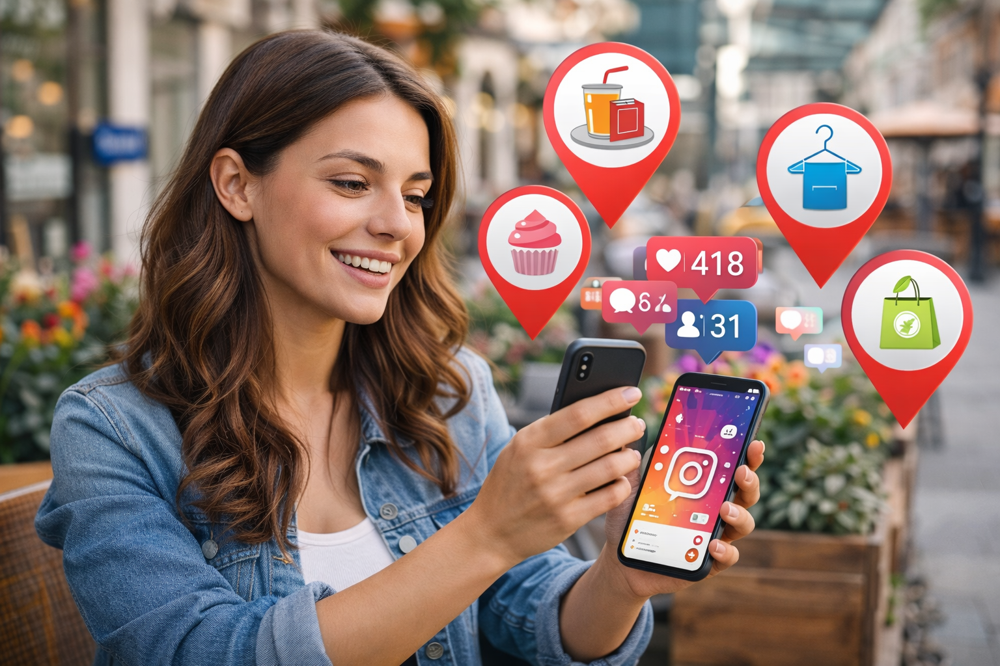

Muitas parcerias são regionais: uma loja na sua cidade, um evento, uma marca que testa em um estado primeiro. Para aparecer nessas buscas, você precisa estar cadastrado em vitrines e ter cidade (e contato) preenchidos. Quem não ativa o cadastro não entra nos filtros por região.

Criadores que têm métricas organizadas e aparecem em vitrines de influenciadores costumam receber mais propostas de marcas.
Por que região importa
Marcas filtram por cidade, estado ou bairro para achar criadores que alcançam aquele público. Se sua cidade não está no seu cadastro, você não aparece. Situações comuns:
- Entrega local — campanhas que exigem criadores de uma área.
- Evento ou lançamento — marca quer presença em uma cidade.
- Loja física — divulgação de endereço ou promoção regional.
O que fazer
- Cadastre seu Instagram em uma plataforma com vitrine para marcas.
- Ative seu cadastro — preencha cidade, estado, contato e tipo de conteúdo.
- Só assim você entra nos filtros por região; quem tem dados completos é encontrado primeiro.
Como a plataforma ajuda
No Busca Influencer você cadastra seu @, vê seu relatório (métricas, engajamento, estimativa de valor) e, ao ativar seu cadastro com cidade e contato, entra na vitrine. Marcas filtram por cidade, estado e nicho — e te encontram. É exatamente o fluxo para aparecer para marcas da sua região. Veja também como marcas encontram influenciadores.
Conclusão
Aparecer para marcas da sua região exige: estar em uma vitrine e ter cadastro ativado (cidade, contato). Sem isso, você depende só de DM e sorte. Com isso, você entra na busca quando a marca filtra por local.
Coloque sua cidade na vitrine e apareça para marcas perto de você
Cadastre seu Instagram no Busca Influencer, ative seu cadastro (cidade e contato) e entre na vitrine. Marcas da sua região te encontram quando filtram por local.
Relatório. Depois, ative com cidade e contato.